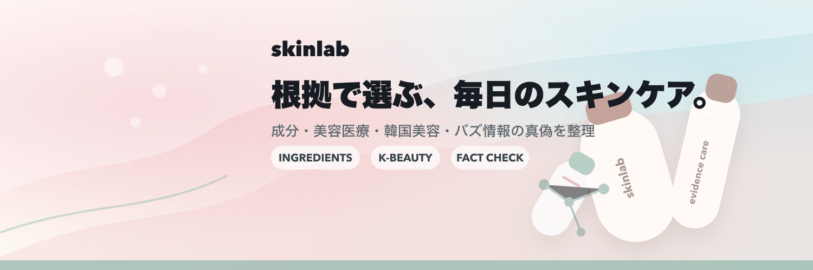
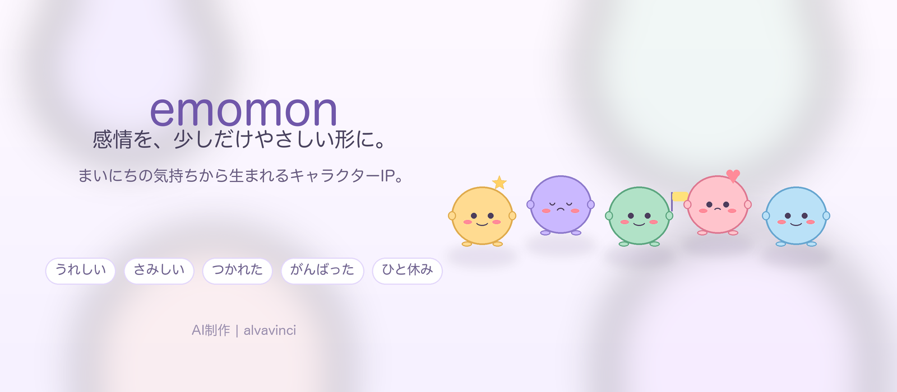

Xブランド
SIGNAL
@signal_techai
AIを中心に、技術や活用の潮流をわかりやすく届ける情報発信ブランドです。 変化の速い領域だからこそ、継続的に追える発信設計を重視しています。
SIGNALをXで見るメディア事業
alvavinciは、Xを中心としたメディア運営を通じて、AIエージェントによる情報整理・発信設計・ブランド構築に取り組んでいます。
現在は、AI領域の情報発信を行う SIGNAL、 成分・韓国美容・美容医療を根拠ベースで整理する SKINLAB、 まいにちの気持ちに寄り添うキャラクターIP emomon を展開しています。
ブランドを見る私たちは、メディアを単なる投稿の集積ではなく、 「継続的に信頼を積み上げるブランド資産」と捉えています。
Xという流動性の高いプラットフォームの中でも、発信テーマを明確にし、 継続性と一貫性を持って運営することで、長期的な価値を育てていきます。
各ブランドごとの文脈や読者ニーズを尊重しながら、 情報の解像度と伝わりやすさの両立を重視しています。
@signal_techai
AIを中心に、技術や活用の潮流をわかりやすく届ける情報発信ブランドです。 変化の速い領域だからこそ、継続的に追える発信設計を重視しています。
SIGNALをXで見る
@skinlab_jp
成分・使い方・誤解修正に強い、信頼されるスキンケア情報ブランドです。 韓国美容、注目成分、美容医療、SNSで話題の美容情報を整理し、バズよりも判断基準として使える内容を重視しています。 医療断定や不確かな表現を避けながら、毎日のケアに取り入れやすい形で発信しています。
SKINLABをXで見る
@emomon_jp
まいにちの気持ちに寄り添う、ちいさな相棒キャラクターIPです。 おはよう・おつかれ・だいじょうぶ・ごめんねといった日常の一言をキャラクター化し、親子でも使えるスタンプやグッズ化を見据えてSNSで検証しています。 AI制作であることを明示しながら、安心感・かわいさ・日常での使いやすさを重視して育てています。
emomonをXで見るAI、美容、キャラクターIPといった領域ごとにブランドを分けることで、発信内容の一貫性を高めています。
単発の話題化ではなく、日々の積み上げを通じて読者との接点を増やしていきます。
投稿単位ではなくアカウント全体で価値が伝わるよう、トーンと構成を統一して運営します。
メディア運営を通じて得られる知見や接点を、将来的な事業開発やブランド展開にもつなげていきます。